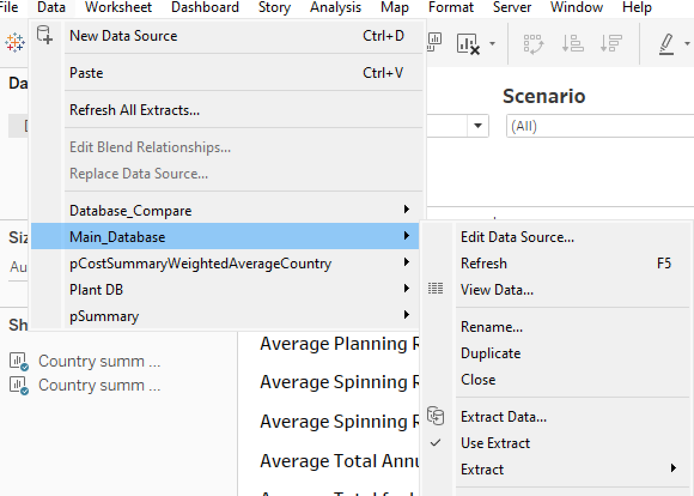
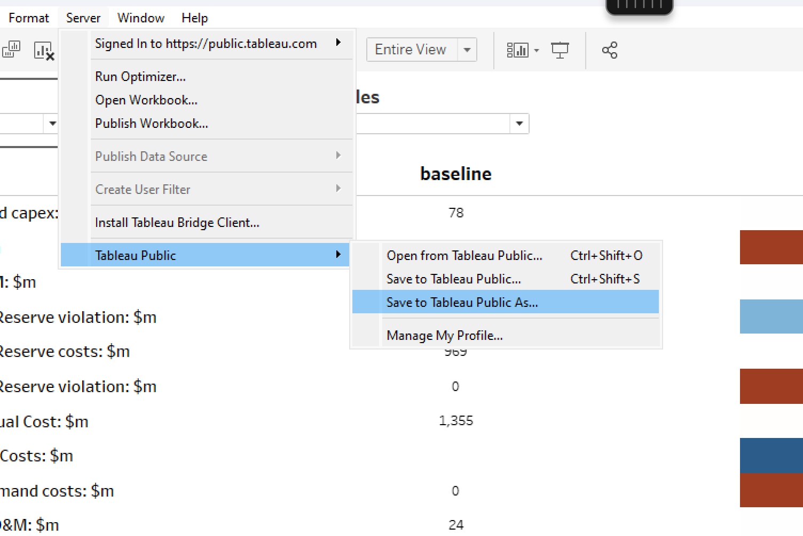

Tableau Workflow#
Tableau is the recommended approach for most users, providing a user-friendly interface for comparing scenarios, countries, and years across various indicators (capacity, energy, trade flows, costs, etc.). Interactive filters allow detailed data exploration.
Example:
This dashboard directly uses the CSV files exported during EPM runs. No manual data formatting is required if the model is launched from the Python workflow.
How to use Tableau for EPM#
A Tableau Creator license is required for creating or editing dashboards. Contact the energy planning team for more details.
1. Create the folder structure for Tableau#
The folder structure should look like this:
├── ESMAP_Tableau.twb
├── ESMAP_logo.png
├── linestring_countries.geojson
├── Page de garde.png
└── scenarios/
├── baseline/
│ ├── output_csv/
│ ├── *.csv
├── scenario_1/
│ ├── output_csv/
│ ├── *.csv
└── ...
In output/tableau in your EPM repository, you’ll find the required file structure.
Drag and drop your simulation results into the scenarios/ folder. Each scenario folder must contain an output_csv/ subfolder with EPM-generated CSVs. If using GAMS Studio, manually extract the CSVs.
Important: One scenario must be named
baseline, or an error will occur.
The ESMAP_Tableau.twb file can be downloaded from here
2. Generate linestring_countries.geojson and add to the directory#
This file is required for geographic visualizations in Tableau. It can be generated by updating the geojson_to_epm.csv file and running the script below.
Step 1: Update the geojson_to_epm.csv#
This CSV file defines how names from the GeoJSON file should be translated into EPM-compatible zone names, and should be stored in the folder output/tableau. It also allows you to split countries into sub-zones if needed (e.g. North/South).
Example can be found here.
Geojson: the name of the country or region as it appears in the GeoJSON file.Example:
United Republic of Tanzania⚠️ This must match exactly the names in the GeoJSON file used for mapping. By default, the code expects the file countries.geojson available here, so names must match those in this file. If you use a custom GeoJSON file, then the names in this column must match your custom file instead.
When a country is split into multiple regions, this name should include the corresponding region.
Example:
Democratic Republic of the Congo - North.EPM: the name used for that zone in the EPM model.Example:
Tanzaniaregion: (optional) only used when splitting a country into several zones. Specifies which part of the country this line refers to.Example:
northcountry: (optional) if a country is split, this column gives the full country name (e.g.Democratic Republic of the Congo), while theGeojsoncolumn may be something likeDemocratic Republic of the Congo - North.division: (optional) describes how the country is split. Current accepted values:NS= North/SouthEW= East/West
More division types may be added in the future.
Step 2: Update the map files zcmap.csv#
This is the map from zones to countries used in the EPM model. It is used as an input to the model. You just need to copy this file from your input folder, and paste it inside the output/tableau folder.
Step 3: Run the script to generate GeoJSON data#
Run the following command from the root of the repository at epm/postprocessing:
cd EPM/epm/postprocessing
python create_geojson.py --folder tableau --geojson geojson_to_epm.csv --zcmap zcmap.csv
The script will generate linestring_countries.geojson for use in Tableau visualizations. The following arguments can be noted:
--folder tableau: location of the working Tableau folder (where your CSVs and maps are).tableauby default.--geojson: the name of the translation file (geojson_to_epm.csv).geojson_to_epm.csvby default.--zcmap: the zone-to-country mapping file (zcmap.csv), typically copied from the model’s input folder.zcmap.csvby default.--zonemap: (optional) specify a custom GeoJSON file if you want to use a different shapefile instead of the default countries.geojson.
3. Upload the folder tableau to OneDrive#
Upload the folder tableau to OneDrive to access from the shared VDI machine. From the VDI, you can access OneDrive and load the files into Tableau.
5. Open the Tableau file#
From the shared VDI, click on the .twb file corresponding to your desired visualization in the folder created in Step 1.
6. Extract data#
Tableau opens in live connection mode by default. This causes delays when interacting with filters or switching views. To avoid these delays, you must extract the data.
For each of these four data sets Database_Compare, Main_Database, pCostSummaryWeightedAverageCountry, Plant DB and pSummary, you must extract the data.
Go to Data and Extract data, then should click on Save settings when asked. If Tableau warns that a file already exists, click Replace this file.
Verify that the data is extracted by checking that the Use Extract option is checked in the Data Source tab for each of these datasets.

7. Save your Dashboard as Public#
Use Tableau Public to visualize and share your results.
You need to sign up for a free Tableau Public account if you don’t have one already.
In Tableau, go to Server, Tableau Public, Save to Tableau Public as.

Choose a name and complete the upload. You will be asked to sign in Tableau with your IDs. Once published, a browser window will open with your dashboard.
You may adapt the settings based on the intended usage of this visualization, by going to the Settings button (after signing in on your browser):
Remove
Show Viz on Profileif you want the visualization to only be accessible to those with a link (hide it from your public profile)Remove
Allow Accessto prevent data download.
Important: this visualization will only work when data has been extracted as described in Step 2 of paragraph Update visualization. Tableau will prompt an error if you attempt to publish with live connections.
7. Update visualization#
To update the visualization for new scenarios, you should follow the steps:
Upload new scenarios with the correct structure, ensuring one is named
baseline.When refreshing with new scenarios, extrated data remains based on the previous scenarios. Two steps can be used to refresh the data and access the new visualization:
Keep previous extracts but view new data: For each of the dataset above, unclick
Use Extract(reverts to live mode).Replace extracts with new data: for each of the dataset above, go to
Extract→Remove→Remove the extract and delete the extract file. Then re-extract to optimize the new data (Step 6)
Once this has been done, data is extracted and optimized so that the visualizations will now load faster.
Note: If nothing shows up: (i) check the folder and file structure, (ii) verify filters are not hiding the data and (iii) make sure data extraction was completed (especially on slower machines).